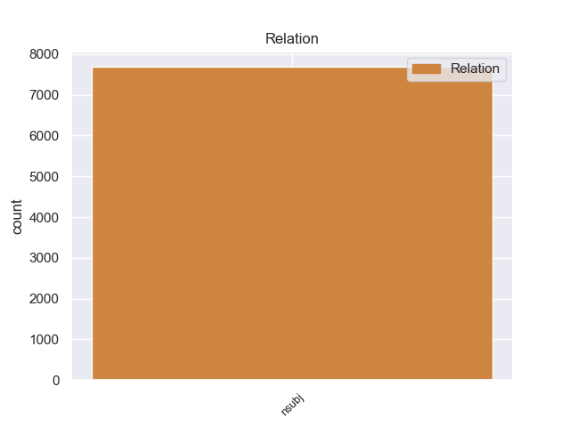
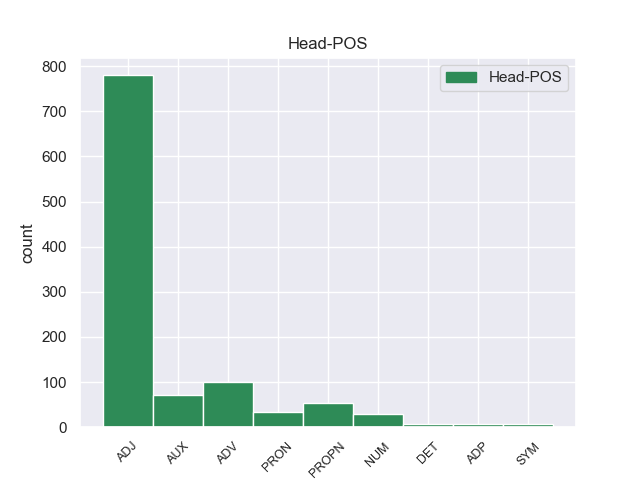
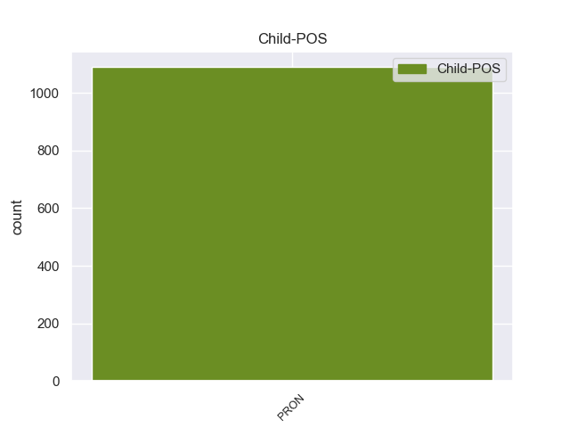

Distribution of features within this leaf



Morphosyntax Rules sorted by frequency.
- When the dependent token is the nominal subject(nsubj) of the head token, and the head token is ADJ and the dependent token is PRON, the Person needs to be 3.
1 Once _ _ _ _ 0 _ _ _
2 I _ _ _ _ 0 _ _ _
3 actually _ _ _ _ 0 _ _ _
4 got _ _ _ _ 0 _ _ _
5 back _ _ _ _ 0 _ _ _
6 in _ _ _ _ 0 _ _ _
7 my _ _ _ _ 0 _ _ _
8 car _ _ _ _ 0 _ _ _
9 , _ _ _ _ 0 _ _ _
10 it it PRON PRP Case=Nom|Gender=Neut|Number=Sing|Person=3|PronType=Prs 12 nsubj 12:nsubj|14:nsubj _
11 was _ _ _ _ 0 _ _ _
12 dirty dirty ADJ JJ Degree=Pos 0 _ _ _
13 and _ _ _ _ 0 _ _ _
14 had _ _ _ _ 0 _ _ _
15 grease _ _ _ _ 0 _ _ _
16 all _ _ _ _ 0 _ _ _
17 over _ _ _ _ 0 _ _ _
18 the _ _ _ _ 0 _ _ _
19 steering _ _ _ _ 0 _ _ _
20 wheel _ _ _ _ 0 _ _ _
21 . _ _ _ _ 0 _ _ _
1 I _ _ _ _ 0 _ _ _
2 'm _ _ _ _ 0 _ _ _
3 pretty _ _ _ _ 0 _ _ _
4 sure _ _ _ _ 0 _ _ _
5 for _ _ _ _ 0 _ _ _
6 the _ _ _ _ 0 _ _ _
7 cast _ _ _ _ 0 _ _ _
8 that _ _ _ _ 0 _ _ _
9 it it PRON PRP Case=Nom|Gender=Neut|Number=Sing|Person=3|PronType=Prs 14 nsubj 14:nsubj _
10 was _ _ _ _ 0 _ _ _
11 the _ _ _ _ 0 _ _ _
12 other _ _ _ _ 0 _ _ _
13 way _ _ _ _ 0 _ _ _
14 around around ADV RB _ 0 _ _ _
15 . _ _ _ _ 0 _ _ _
1 I _ _ _ _ 0 _ _ _
2 knew _ _ _ _ 0 _ _ _
3 what what PRON WP PronType=Int 0 _ _ _
4 it it PRON PRP Case=Nom|Gender=Neut|Number=Sing|Person=3|PronType=Prs 3 nsubj 3:nsubj _
5 was _ _ _ _ 0 _ _ _
6 and _ _ _ _ 0 _ _ _
7 told _ _ _ _ 0 _ _ _
8 the _ _ _ _ 0 _ _ _
9 guy _ _ _ _ 0 _ _ _
10 that _ _ _ _ 0 _ _ _
11 it _ _ _ _ 0 _ _ _
12 was _ _ _ _ 0 _ _ _
13 n't _ _ _ _ 0 _ _ _
14 a _ _ _ _ 0 _ _ _
15 fps _ _ _ _ 0 _ _ _
16 . _ _ _ _ 0 _ _ _
1 The _ _ _ _ 0 _ _ _
2 motel _ _ _ _ 0 _ _ _
3 is _ _ _ _ 0 _ _ _
4 very _ _ _ _ 0 _ _ _
5 well _ _ _ _ 0 _ _ _
6 maintained _ _ _ _ 0 _ _ _
7 , _ _ _ _ 0 _ _ _
8 and _ _ _ _ 0 _ _ _
9 the _ _ _ _ 0 _ _ _
10 managers _ _ _ _ 0 _ _ _
11 are _ _ _ _ 0 _ _ _
12 so _ _ _ _ 0 _ _ _
13 accomodating _ _ _ _ 0 _ _ _
14 , _ _ _ _ 0 _ _ _
15 it it PRON PRP Case=Nom|Gender=Neut|Number=Sing|Person=3|PronType=Prs 16 nsubj 16:nsubj SpaceAfter=No
16 's be AUX VBZ Mood=Ind|Number=Sing|Person=3|Tense=Pres|VerbForm=Fin 0 _ _ _
17 kind _ _ _ _ 0 _ _ _
18 of _ _ _ _ 0 _ _ _
19 like _ _ _ _ 0 _ _ _
20 visiting _ _ _ _ 0 _ _ _
21 family _ _ _ _ 0 _ _ _
22 each _ _ _ _ 0 _ _ _
23 year _ _ _ _ 0 _ _ _
24 ! _ _ _ _ 0 _ _ _
25 ;-) _ _ _ _ 0 _ _ _
1 It it PRON PRP Case=Nom|Gender=Neut|Number=Sing|Person=3|PronType=Prs 5 nsubj 5:nsubj|12:nsubj _
2 is _ _ _ _ 0 _ _ _
3 next _ _ _ _ 0 _ _ _
4 to _ _ _ _ 0 _ _ _
5 Gare Gare PROPN NNP Number=Sing 0 _ _ _
6 du _ _ _ _ 0 _ _ _
7 Nord _ _ _ _ 0 _ _ _
8 and _ _ _ _ 0 _ _ _
9 a _ _ _ _ 0 _ _ _
10 five _ _ _ _ 0 _ _ _
11 minute _ _ _ _ 0 _ _ _
12 walk _ _ _ _ 0 _ _ _
13 to _ _ _ _ 0 _ _ _
14 Sacre _ _ _ _ 0 _ _ _
15 Coeur _ _ _ _ 0 _ _ _
16 which _ _ _ _ 0 _ _ _
17 is _ _ _ _ 0 _ _ _
18 excellent _ _ _ _ 0 _ _ _
19 for _ _ _ _ 0 _ _ _
20 shopping _ _ _ _ 0 _ _ _
21 . _ _ _ _ 0 _ _ _
1 It it PRON PRP Case=Nom|Gender=Neut|Number=Sing|Person=3|PronType=Prs 3 nsubj 3:nsubj _
2 was _ _ _ _ 0 _ _ _
3 4:50 4:50 NUM CD NumType=Card 0 _ _ _
4 when _ _ _ _ 0 _ _ _
5 a _ _ _ _ 0 _ _ _
6 friend _ _ _ _ 0 _ _ _
7 told _ _ _ _ 0 _ _ _
8 me _ _ _ _ 0 _ _ _
9 to _ _ _ _ 0 _ _ _
10 call _ _ _ _ 0 _ _ _
11 Bud _ _ _ _ 0 _ _ _
12 , _ _ _ _ 0 _ _ _
13 he _ _ _ _ 0 _ _ _
14 would _ _ _ _ 0 _ _ _
15 take _ _ _ _ 0 _ _ _
16 care _ _ _ _ 0 _ _ _
17 of _ _ _ _ 0 _ _ _
18 me _ _ _ _ 0 _ _ _
19 . _ _ _ _ 0 _ _ _
1 Got _ _ _ _ 0 _ _ _
2 the _ _ _ _ 0 _ _ _
3 tile _ _ _ _ 0 _ _ _
4 ripped _ _ _ _ 0 _ _ _
5 out _ _ _ _ 0 _ _ _
6 , _ _ _ _ 0 _ _ _
7 call _ _ _ _ 0 _ _ _
8 today _ _ _ _ 0 _ _ _
9 , _ _ _ _ 0 _ _ _
10 now _ _ _ _ 0 _ _ _
11 all _ _ _ _ 0 _ _ _
12 the _ _ _ _ 0 _ _ _
13 sudden _ _ _ _ 0 _ _ _
14 this _ _ _ _ 0 _ _ _
15 grinder _ _ _ _ 0 _ _ _
16 wo _ _ _ _ 0 _ _ _
17 n't _ _ _ _ 0 _ _ _
18 leave _ _ _ _ 0 _ _ _
19 a _ _ _ _ 0 _ _ _
20 finished _ _ _ _ 0 _ _ _
21 look _ _ _ _ 0 _ _ _
22 AND _ _ _ _ 0 _ _ _
23 it it PRON PRP Case=Nom|Gender=Neut|Number=Sing|Person=3|PronType=Prs 25 nsubj 25:nsubj|29:nsubj SpaceAfter=No
24 's _ _ _ _ 0 _ _ _
25 $ $ SYM $ _ 0 _ _ _
26 125 _ _ _ _ 0 _ _ _
27 PLUS _ _ _ _ 0 _ _ _
28 around _ _ _ _ 0 _ _ _
29 $ _ _ _ _ 0 _ _ _
30 75 _ _ _ _ 0 _ _ _
31 for _ _ _ _ 0 _ _ _
32 the _ _ _ _ 0 _ _ _
33 inserts _ _ _ _ 0 _ _ _
34 . _ _ _ _ 0 _ _ _
1 Than _ _ _ _ 0 _ _ _
2 the _ _ _ _ 0 _ _ _
3 troops _ _ _ _ 0 _ _ _
4 being _ _ _ _ 0 _ _ _
5 issued _ _ _ _ 0 _ _ _
6 the _ _ _ _ 0 _ _ _
7 weapon _ _ _ _ 0 _ _ _
8 were _ _ _ _ 0 _ _ _
9 told _ _ _ _ 0 _ _ _
10 it _ _ _ _ 0 _ _ _
11 was _ _ _ _ 0 _ _ _
12 self _ _ _ _ 0 _ _ _
13 - _ _ _ _ 0 _ _ _
14 cleaning _ _ _ _ 0 _ _ _
15 , _ _ _ _ 0 _ _ _
16 which which DET WDT PronType=Int 0 _ _ _
17 it it PRON PRP Case=Nom|Gender=Neut|Number=Sing|Person=3|PronType=Prs 16 nsubj 16:nsubj _
18 was _ _ _ _ 0 _ _ _
19 n't _ _ _ _ 0 _ _ _
20 . _ _ _ _ 0 _ _ _
No non-conforming examples found.